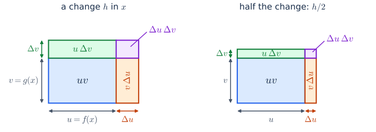
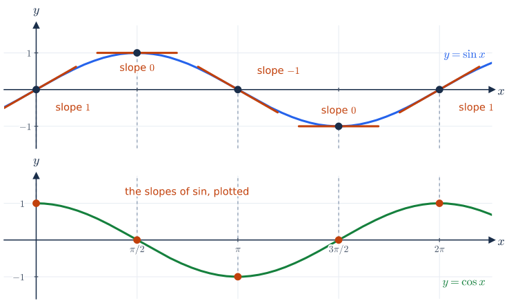
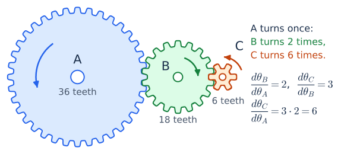
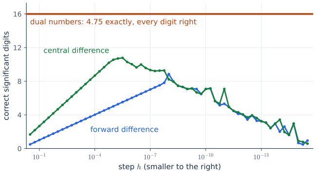

Differentiate products, quotients, trigonometric functions and compositions by rule instead of by limit, know why each rule is true, and check your answers by hand, on a graph and with SymPy. You will also see how a program differentiates another program exactly, with dual numbers.
⏱ 255 minYou need: Modules 1 to 4, in particular the derivative and its first rules (Module 4)
In this module you will
Prove and use the product and quotient rules, and extend the power rule to negative integers
Differentiate the six trigonometric functions, starting from the limits of Module 2
Recognise a composition and differentiate it with the chain rule, through chains of any length
Combine the rules systematically, and simplify and check the results
Use SymPy to differentiate, and decide whether two different-looking answers are equal
Explain how automatic differentiation with dual numbers computes exact derivatives
1
Building derivatives from pieces
Module 4 defined the derivative of a function f at x as a limit,
f′(x)=h→0limhf(x+h)−f(x),
and worked it out for the simplest functions: a constant has derivative 0, and dxdxn=nxn−1 for every positive integer n (the power rule). It also proved two rules that build new derivatives from old ones: the derivative of a sum or a difference is the sum or difference of the derivatives, (f±g)′=f′±g′, and a constant factor stays where it is, (cf)′=cf′. With these, every polynomial can be differentiated term by term:
dxd(4x3−5x2+7)=12x2−10x.
Most functions are built with more than sums and constant multiples. x2sinx is a product, 1+x21 a quotient, and sin(x2) and 1+x2 are compositions (Section 1.5). Each could be differentiated from the definition, with a new limit to work out every time. This module does that work once and for all: it proves one rule for each way of combining two functions, and it finds the derivatives of the trigonometric functions. After that, the derivative of a formula follows the way the formula is built.
Built as
Its derivative
Proved in
f+g
f′+g′
Module 4
cf,c a constant
cf′
Module 4
fg
f′g+fg′
Section 5.2
gf
g2f′g−fg′
Section 5.3
f(g(x))
f′(g(x))g′(x)
Section 5.5
The proofs use three facts from earlier modules: a function that is differentiable at a point is continuous there (Theorem 4.1); limits of sums, products and quotients are the sums, products and quotients of the limits, provided these exist and no denominator is 0 (the limit laws of Module 2); and, for the trigonometric functions, the two limits that Module 2 proved,
θ→0limθsinθ=1,θ→0limθ1−cosθ=0.
Sections 5.2 to 5.5 prove the rules. Sections 5.6 to 5.8 put them to work: a strategy for combining them, derivatives with SymPy, and the way programs compute derivatives.
2
The product rule
The derivative of a sum is the sum of the derivatives, so you might hope that the derivative of a product is the product of the derivatives. It is not. Take f(x)=x and g(x)=x2. Their product is x3, with derivative 3x2; the product of their derivatives is 1⋅2x=2x. At x=1 these are 3 and 2.
A growing rectangle
To find the right rule, picture a product as an area. Let u=f(x) and v=g(x) be the sides of a rectangle (for the picture, suppose they are positive), so that its area is A=uv. When x increases by h, the sides change by
ΔuΔv=f(x+h)−f(x),=g(x+h)−g(x),
and the area becomes (u+Δu)(v+Δv). Figure 5.1 cuts the new rectangle into the old one, a strip of area uΔv along the top, a strip of area vΔu down the side, and a small corner of area ΔuΔv:
ΔA=(u+Δu)(v+Δv)−uv=uΔv+vΔu+ΔuΔv.

Figure 5.1
The product rule as a growing rectangle with sides u=f(x) and v=g(x). When x changes by h, the area uv gains a green strip uΔv, an orange strip vΔu and a purple corner ΔuΔv. On the right the change in x is halved, so Δu and Δv are about half as large: the strips halve, but the corner shrinks to a quarter.
Divide by h to get the average rate of change of the area:
hΔA=uhΔv+vhΔu+ΔuhΔv.
As h→0,Δv/h→g′(x) and Δu/h→f′(x), while Δu→0. The corner is small in both directions, so even after division by h it disappears, and what is left is ug′(x)+vf′(x): each side’s rate of change times the other side.
Theorem 5.1The product rule
If f and g are differentiable at x, then so is their product fg, and
(fg)′(x)=f′(x)g(x)+f(x)g′(x).
In Leibniz’s notation, with u=f(x) and v=g(x):dxd(uv)=dxduv+udxdv.
Proof
The proof turns the picture into limits. Write f and g for f(x) and g(x), and for h=0 let Δf=f(x+h)−f(x) and Δg=g(x+h)−g(x), so that f(x+h)=f+Δf and g(x+h)=g+Δg. Expand the product, as in the rectangle, and divide by h:
Now let h→0. Since f and g are differentiable at x,Δf/h→f′(x) and Δg/h→g′(x). And Δf→0, because a function that is differentiable at x is continuous there (Theorem 4.1). By the limit laws for sums and products, the expression approaches f′(x)g(x)+f(x)g′(x)+0⋅g′(x), which is the product rule.
∎
In words: the derivative of a product is the derivative of the first factor times the second, plus the first times the derivative of the second. The last term of the proof, ΔfΔg/h, is the corner of the picture, and the continuity of f is what makes it vanish.
The hypotheses are what the proof needs, not what a product needs in order to have a derivative. If f or g is not differentiable at x, the theorem says nothing: ∣x∣ has no derivative at 0 (its graph has a corner there), but ∣x∣⋅∣x∣=x2 does.
Example 5.1Two ways to differentiate a product✓ Checked
Differentiate F(x)=(x2+1)(x3−2x) with the product rule, and check by expanding first.
With f(x)=x2+1 and g(x)=x3−2x, the derivatives are f′(x)=2x and g′(x)=3x2−2, so
Expanding first: F(x)=x5−2x3+x3−2x=x5−x3−2x, so F′(x)=5x4−3x2−2, the same.
Expanding works for polynomials. The product rule works for every product, including those that cannot be expanded, such as x2sinx (Section 5.4), and it works with nothing but numbers.
Example 5.2Power in a circuit✓ Checked
The electrical power delivered to a component is P=VI, the voltage across it times the current through it. Suppose that at some instant the voltage is 12 V and falling at 0.5 V per second, while the current is 2 A and rising at 0.1 A per second. Is the power rising or falling, and how fast?
V and I are functions of time t, and at that instant V=12,V′=−0.5,I=2 and I′=0.1. By the product rule,
P′=V′I+VI′=(−0.5)(2)+(12)(0.1)=−1+1.2=0.2.
The power is rising, at 0.2 watts per second: the rising current outweighs the falling voltage.
Used twice, the product rule differentiates a product of three functions:
(fgk)′=((fg)k)′=(fg)′k+(fg)k′=f′gk+fg′k+fgk′.
Each term differentiates one factor and leaves the others alone; Exercise 5.10 takes this further.
Watch out
(fg)′=f′g′ is wrong, as x⋅x2 showed. Two ways to remember the right rule: each term differentiates exactly one factor; and in the rectangle, the change in each side sweeps out a strip along the other side.
3
The quotient rule
A quotient changes when its top changes and when its bottom changes, and the two effects pull in opposite directions: a larger numerator makes the fraction larger, a larger denominator makes it smaller. The rule has both, with a minus sign between them.
Theorem 5.2The quotient rule
If f and g are differentiable at x and g(x)=0, then f/g is differentiable at x, and
(gf)′(x)=g(x)2f′(x)g(x)−f(x)g′(x).
Proof
First, f/g is defined near x:g is continuous at x, so for h close enough to 0, g(x+h) is close to g(x), which is not 0, and so g(x+h)=0. For such h=0, with f,g,Δf and Δg as in the proof of Theorem 5.1, put the two fractions over a common denominator:
As h→0,Δf/h→f′(x) and Δg/h→g′(x), and Δg→0 because g is continuous at x. So the denominator approaches g(x)2, which is not 0, and by the limit laws the expression approaches g(x)2f′(x)g(x)−f(x)g′(x).
∎
The numerator is the product rule’s f′g+fg′ with a minus sign, so the order matters: the derivative of the top comes first. A rhyme helps some people: “low d-high minus high d-low, over the square of what’s below”.
Example 5.3A quotient of polynomials✓ Checked
Differentiate y=x2+1x2−1, and find where its tangent line is horizontal.
The denominator x2+1 is never 0, so the rule applies at every x. Both x2−1 and x2+1 have derivative 2x:
The tangent is horizontal where y′=0. A fraction is 0 when its numerator is 0, so 4x=0: only at x=0, the point (0,−1). It is the lowest point of the graph. Indeed, writing x2−1=(x2+1)−2 gives y=1−x2+12; since x2+1≥1, the fraction is at most 2, so y≥1−2=−1. The slope is negative to the left of 0 and positive to the right.
Negative powers
The quotient rule completes the power rule for integers.
Theorem 5.3The power rule for integers
For every integer n,
dxdxn=nxn−1,
for every x if n≥1, and for every x=0 if n≤0.
Proof
Module 4 proved the case n≥1. For n=0,x0=1 is constant, with derivative 0=0⋅x−1. If n is negative, write n=−m with m a positive integer, so that xn=1/xm for x=0. By the quotient rule, with numerator 1 (derivative 0) and denominator xm (derivative mxm−1),
dxdxm1=(xm)20⋅xm−1⋅mxm−1=x2m−mxm−1=−mx−m−1,
and −mx−m−1=nxn−1.
∎
For example, dxdx1=dxdx−1=−x−2=−x21, the number that the difference quotients of 1/x approached in Exercise 1.9.
Example 5.4How fast gravity weakens✓ Checked
The gravitational pull between two bodies at distance r is F(r)=r2k, where k>0 is a constant that depends on their masses. How fast does F change with r?
Write F(r)=kr−2 and use the power rule with n=−2:
F′(r)=k⋅(−2)r−3=−r32k.
The derivative is negative: the pull weakens as the distance grows. Compare it with F itself: F′(r)=−r2⋅r2k=−r2F(r). Near r the graph of F is close to its tangent line (Module 4), so a small step Δr outwards changes the pull by about
F′(r)Δr=−2rΔrF(r):
moving 1% further away weakens the pull by about 2%. (Exactly: 1/1.012≈0.9803, a loss of about 1.97%.)
Watch out
(gf)′=g′f′ is wrong. For x=0,xx2=x has derivative 1, but (x)′(x2)′=12x=2x. Keep the order in the numerator, f′g−fg′: swapping it changes the sign of the answer. And use the simplest tool: for x43=3x−4 the power rule is quicker than the quotient rule, and for 5x3+x, with a constant denominator, the constant multiple rule is.
4
Derivatives of the trigonometric functions
Figure 5.2 shows the graph of sinx with some of its tangent lines. At x=0 the graph climbs with slope 1; at the crest x=π/2 it is flat; at x=π it falls with slope −1; at the trough x=3π/2 it is flat again; and at x=2π it climbs with slope 1 once more. These slopes, 1,0,−1,0,1, are the values of cosx at the same points. The table compares the difference quotients of sinx, with h=0.001, with cosx at more points:
x
0.001sin(x+0.001)−sinx
cosx
0
1.0000
1.0000
6π
0.8658
0.8660
4π
0.7068
0.7071
3π
0.4996
0.5000
2π
−0.0005
0.0000
32π
−0.5004
−0.5000
π
−1.0000
−1.0000
In every row the two columns agree to within 0.0005, and a smaller h makes the agreement closer.

Figure 5.2
Top: y=sinx with its tangent lines at 0,π/2,π,3π/2 and 2π, whose slopes are 1,0,−1,0,1. Bottom: y=cosx passes through exactly those values (orange dots). Where the sine curve is flat, at its crest and its trough, the cosine crosses zero.
The reason is in the addition formulas and the two limits of Module 2.
Theorem 5.4Derivatives of sine and cosine
For every real number x (in radians),
dxdsinxdxdcosx=cosx,=−sinx.
Proof
By the addition formula sin(x+h)=sinxcosh+cosxsinh (Section 1.4),
Here x is fixed and only h varies. As h→0 the two fractions approach 0 and 1 (Module 2), so the difference quotient approaches −sinx⋅0+cosx⋅1=cosx.
For the cosine, the addition formula cos(x+h)=cosxcosh−sinxsinh gives in the same way
hcos(x+h)−cosx=−cosx⋅h1−cosh−sinx⋅hsinh,
which approaches −cosx⋅0−sinx⋅1=−sinx.
∎
The minus sign in (cosx)′=−sinx shows in the graphs: for x a little above 0, the cosine falls from its crest, while sinx is positive.
Going deeperWhere the addition formulas come from
Module 1 quoted the addition formulas from school trigonometry. Here is a proof from the unit circle. Let P and Q be the points of the unit circle at angles x and y. Turning the whole picture through the angle −y moves Q to (1,0) and P to the point at angle x−y, and turning does not change distances. So the squared distance from P to Q equals the squared distance from (cos(x−y),sin(x−y)) to (1,0):
Expand both sides and use sin2θ+cos2θ=1: the left side is 2−2(cosxcosy+sinxsiny) and the right side is 2−2cos(x−y). Hence
cos(x−y)=cosxcosy+sinxsiny.
Everything else follows from this. Replacing y by −y (cosine is even, sine is odd) gives the first formula below; taking x=π/2, where the cosine is 0 and the sine is 1, gives the second:
cos(x+y)cos(2π−y)=cosxcosy−sinxsiny,=siny.
With π/2−y in place of y, the second says sin(π/2−y)=cosy. Finally,
Why radians. The limit hsinh→1 holds because h is measured in radians, as an arc of the unit circle (Module 2). In degrees, a stray factor π/180 appears in the derivative (Example 5.8). Radians are the unit in which the derivative of the sine is exactly the cosine.
The other four functions
The quotient rule gives the derivatives of the other four trigonometric functions from those of sine and cosine.
Theorem 5.5Derivatives of tan, cot, sec and csc
Where cosx=0,
dxdtanxdxdsecx=sec2x,=secxtanx,
and where sinx=0,
dxdcotxdxdcscx=−csc2x,=−cscxcotx.
Proof
Each is a quotient of the sine and the cosine (or of 1 and one of them), so use the quotient rule, then sin2x+cos2x=1. Where cosx=0,
A mass bounces on a spring. Suppose its height above its resting point after t seconds is s(t)=4sint+3cost centimetres. Find its velocity v=s′ and its acceleration a=v′, and compare a with s.
v(t)a(t)=4cost−3sintcm/s,=−4sint−3costcm/s2.
So a(t)=−s(t) at every instant: the acceleration always points back towards the resting point, and is proportional to the distance from it. That is how a spring pulls (Hooke’s law), and Module 13 shows that every motion with this property is a combination of a sine and a cosine. At t=0 the mass is 3 cm up and moving upwards at 4 cm/s.
Watch out
Two sign slips: (cosx)′=−sinx, not sinx; and the derivatives of cotx and cscx carry minus signs too. All six formulas assume radians: check them with a calculator in degree mode and they fail.
5
The chain rule
Compositions are everywhere: sin(2x),(x2+1)10,1+x2. Start with numbers. What is the slope of y=sin(2x) at x=0? The difference quotients there are hsin(2h)−sin0=hsin(2h):
h
hsin(2h)
0.1
1.986693
0.01
1.999867
0.001
1.999999
They approach 2, not cos(2⋅0)=1.Section 1.5 explains why: the graph of sin(2x) is the graph of sinx squashed horizontally by the factor 2, so it climbs twice as steeply, and every slope doubles. The derivative of sin(2x) is 2cos(2x): the derivative of the outer function, the sine, evaluated at the inner function 2x, times the rate 2 at which the inner function changes.
Rates multiply
In Figure 5.3, gear A has 36 teeth, gear B 18 and gear C 6. While A turns once, 36 teeth pass the point where it meets B, so B turns 36/18=2 times. For each turn of B, 18 teeth pass C, so C turns 18/6=3 times. So C turns 3⋅2=6 times as fast as A. If θA,θB and θC are the angles through which the gears have turned, each measured in its own direction of turning,
dθAdθC=dθBdθC⋅dθAdθB=3⋅2=6.

Figure 5.3
Rates multiply. Gear B turns twice for each turn of gear A, and gear C three times for each turn of B, so C turns 3⋅2=6 times for each turn of A. Gears that touch turn in opposite directions (arrows).
Converting units works the same way. Suppose a car uses 0.06 litres of fuel per kilometre and drives at 90 km/h. Then it uses 0.06⋅90=5.4 litres per hour, and the units cancel like fractions: (litres per km) times (km per hour) is litres per hour.
For gears and fuel the rates are constant. For curves they change from point to point, but near each point a differentiable function is close to its tangent line, which has a constant rate, its slope. So, point by point, the rates multiply.
Theorem 5.6The chain rule
If g is differentiable at x and f is differentiable at g(x), then the composition F=f∘g,F(x)=f(g(x)), is differentiable at x, and
F′(x)=f′(g(x))g′(x).
In Leibniz’s notation, with y=f(u) and u=g(x),
dxdy=dudy⋅dxdu,
where dy/du is evaluated at u=g(x).
In words: differentiate the outer function, leaving the inner function inside it unchanged, and multiply by the derivative of the inner function. The symbol f′(g(x)) reads “f prime of g of x”: the derivative of f, evaluated at the number g(x). The Leibniz form looks like cancelling du: here dy/dx behaves like a fraction, which makes the rule easy to remember. It is not a proof, though, because dy/du is a single symbol for a limit (Module 4), not a fraction.
Note where f must be differentiable: at g(x), the point where it is used, not at x. Without that hypothesis the rule can fail: with f(u)=∣u∣ and g(x)=x2−1,f is differentiable at 1 but not at g(1)=0, and f(g(x))=x2−1 has a corner at x=1.
The idea of the proof. Let u=g(x), and when x changes by h, let Δu=g(x+h)−g(x) and Δy=f(u+Δu)−f(u) be the changes in u and in y. If Δu=0,
hΔy=ΔuΔy⋅hΔu.
As h→0,Δu→0 (because g is continuous at x), so Δy/Δu→f′(u), while Δu/h→g′(x); the product approaches f′(u)g′(x). This is the gear argument with limits, and it is almost a proof. The gap: Δu can be 0 for values of h=0 as close to 0 as you like (for a constant g, it is 0 for every h; Exercise 5.11 gives a less obvious example), and then Δy/Δu is 0/0. The next box closes the gap with a complete proof; a first reading may skip it.
Going deeperA proof of the chain rule
The way round the division by Δu is to describe the differentiability of f without dividing. Let u=g(x). Since f is differentiable at u, it is defined on an open interval around u; for k=0 with u+k in that interval, let
E(k)=kf(u+k)−f(u)−f′(u),
the amount by which the difference quotient exceeds f′(u), and let E(0)=0. That f is differentiable at u says exactly that E(k)→0 as k→0; since E(0)=0,E is continuous at 0. Multiplying by k,
f(u+k)−f(u)=(f′(u)+E(k))k,
for k=0, and also for k=0, when both sides are 0.
Now let h=0 be small enough that g(x+h) lies in the interval (possible because g is continuous at x), and put k=Δu=g(x+h)−g(x), which is allowed whether Δu is 0 or not. Dividing by h,
hf(g(x+h))−f(g(x))=(f′(u)+E(Δu))hΔu.
Let h→0. Then Δu/h→g′(x), since g is differentiable at x. Also Δu→0, since g is continuous at x, and therefore E(Δu)→E(0)=0, since E is continuous at 0 (the limit of a composition, Theorem 3.4). So the right side approaches f′(u)g′(x), which proves the chain rule.
Each hypothesis was used: the differentiability of g at x, for Δu/h→g′(x) and, through continuity, for Δu→0; and the differentiability of f at u=g(x), not at x, for E(k)→0.
Using the chain rule
To use the chain rule, name the inner function, differentiate the outer function with the inner one left inside, and multiply by the inner derivative.
Example 5.7Three compositions✓ Checked
Differentiate (a) (2x+1)5, (b) sin(x2) and (c) sin2x.
(a) The inner function is u=2x+1, with du/dx=2, and the outer function is u5:
dxd(2x+1)5=5(2x+1)4⋅2=10(2x+1)4.
Expanding (2x+1)5 first would also work, with much more effort.
(c)sin2x means (sinx)2: inner u=sinx, outer u2. So dxdsin2x=2sinx⋅cosx.
In (b) the sine is outside and in (c) inside: the same two functions, composed in the two orders, have different derivatives.
Example 5.8Sine in degrees✓ Checked
In degree mode, a calculator’s sine key computes S(x)=sin(x∘)=sin(180πx). Find S′(x).
The inner function is u=180πx, with du/dx=180π, and the outer function is sinu:
S′(x)=cos(180πx)⋅180π=180πcos(x∘).
At x=0 the slope is π/180≈0.017453 per degree. Every derivative of a trigonometric function would carry this factor if angles were measured in degrees.
The chain rule extends to longer chains: apply it once for each link, working from the outside in.
Example 5.9A chain of three links✓ Checked
Differentiate y=sin3(4x), which means (sin(4x))3.
Three functions act in turn: v=4x, then u=sinv, then y=u3. The chain rule, used twice, multiplies three rates:
In one line: the cube first, bringing down a 3 and leaving sin(4x) inside; then the sine, leaving 4x inside; then 4x itself.
Powers and roots of functions
With the power rule for integers (Theorem 5.3) as the outer derivative, the chain rule gives, wherever g is differentiable, for every integer n (with g(x)=0 if n≤0),
dxd(g(x))n=n(g(x))n−1g′(x).
Example 5.10A negative power of a function✓ Checked
Differentiate y=(x2+1)31.
Write y=(x2+1)−3. With n=−3 and g(x)=x2+1,
y′=−3(x2+1)−4⋅2x=−(x2+1)46x.
The quotient rule gives the same answer after cancelling a factor (x2+1)2, with more work.
The power rule for fractional exponents is proved in Module 6, for every real exponent. One fractional power is known already: Example 4.5 found from the definition that
dxdx=2x1(x>0),
which is 21x−1/2, the power rule with n=21. (Multiplying the top and the bottom of the difference quotient by x+h+x turns it into x+h+x1, which approaches 2x1.) At x=0 there is no derivative: x is not defined to the left of 0, and from the right its difference quotients hh−0=h1 grow without bound as h→0+, so the graph leaves the origin vertically.
With the chain rule, wherever g(x)>0 and g is differentiable,
dxdg(x)=2g(x)g′(x).
Example 5.11Square roots of polynomials✓ Checked
Differentiate (a) 1+x2 and (b) (x2+1)3/2.
(a)1+x2>0 for every x, so for every x
dxd1+x2=21+x22x=1+x2x.
(b) The power 23 is not yet covered, but (x2+1)3/2=(x2+1)x2+1, a product. By the product rule and (a),
The power rule with n=23, which Module 6 proves, agrees: 23(x2+1)1/2⋅2x=3xx2+1.
Watch out
Three chain rule slips. Forgetting the inner derivative: dxdsin(2x) is 2cos(2x), not cos(2x). Changing the inside: the outer derivative is evaluated at the inner function, unchanged, so dxdsin(x2)=cos(x2)⋅2x, not cosx⋅2x and not cos(2x). And confusing a composition with a product: sin(x2) needs the chain rule, xsinx the product rule.
6
Combining the rules
Real formulas combine several rules. A systematic order keeps the work under control.
Key idea
To differentiate a formula:
Rewrite it if that helps. Use negative powers for reciprocals (x43=3x−4); cancel common factors, noting the points left out; expand a short product of polynomials.
Find the last operation: the one you would carry out last when computing the formula’s value at a number. It chooses the rule: a sum, the sum rule; a product, the product rule; a quotient, the quotient rule; a function applied to something other than x itself, the chain rule.
Apply that rule, and treat each piece it leaves to differentiate in the same way, until only the basic derivatives remain.
Simplify: take out common factors, combine fractions, use identities such as sin2x+cos2x=1, and say where the result holds.
Check it: at a point with a difference quotient, on a graph (the grapher below), or with SymPy (Section 5.7).
Formula
Last operation
First rule
x2sinx
multiply x2 by sinx
product
sin(x2)
take the sine of x2
chain
sin2x
square sinx
chain
sinxx
divide x by sinx
quotient
sinxcos(3x)
multiply
product, then chain for cos(3x)
Example 5.12A product of powers✓ Checked
Differentiate y=x3(2x−1)4, simplify, and find where the tangent is horizontal.
The last operation is the product of x3 and (2x−1)4. The second factor needs the chain rule: its derivative is 4(2x−1)3⋅2=8(2x−1)3. So
y′=3x2(2x−1)4+x3⋅8(2x−1)3.
Both terms contain x2(2x−1)3; take it out:
y′=x2(2x−1)3[3(2x−1)+8x]=x2(2x−1)3(14x−3).
The factored form shows at once where y′=0: at x=0,x=21 and x=143. The tangent is horizontal at these three points. The expanded form, 112x6−192x5+120x4−32x3+3x2, hides this.
Example 5.13A quotient that simplifies✓ Checked
Differentiate y=1+cosxsinx, where cosx=−1.
The quotient rule, then the Pythagorean identity in the numerator:
The last operation is the fourth power, so the chain rule comes first, with the quotient as the inner function. Its derivative, by the quotient rule, is
dxdx+1x−1=(x+1)21⋅(x+1)−(x−1)⋅1=(x+1)22,
so
y′=4(x+1x−1)3⋅(x+1)22=(x+1)58(x−1)3.
The grapher draws a function and its derivative together. It computes f′ numerically, with a central difference (Module 4), so it can check a formula that you found by hand.
Try it
The top graph shows y=f(x) and its tangent line at x=a; the bottom graph shows y=f′(x), computed numerically, with the point (a,f′(a)). Move a with the slider, or click either graph. Start with x3−3x: find the two points where the readout says the graph is flat, and watch the lower graph cross zero there. Then choose xsinx and predict f′(0) with the product rule before you move a to 0. Finally type sin(x)/(1 + cos(x)) from Example 5.13: its derivative 1+cosx1 is positive, so the readout should say rising wherever the function is defined.
Watch out
Simplify a function before you differentiate it when that is cheap, but keep track of what the simplification assumes. For x=1,x−1x2−1=x+1, so its derivative is 1 at every x=1; at x=1 the function is not defined, so it has no derivative there. And an unsimplified answer is not wrong, only harder to use: Example 5.12 needed the factored form to find where the tangent is horizontal.
7
Derivatives with SymPy
SymPy’s diff (Module 4) knows every rule of this module. sp.diff(expr, x) differentiates expr with respect to x; sp.factor and sp.simplify (Module 1) tidy the result.
Compute itDifferentiating with SymPy
Python
import sympy as sp
x = sp.symbols('x')
y = x**3*(2*x - 1)**4# Example 5.12
dy = sp.diff(y, x)
print(dy)
print(sp.factor(dy))
print(sp.expand(dy))
The first line is the product rule’s answer before any simplifying, with the terms in SymPy’s order; factor gives the form of Example 5.12, and expand the expanded form, correct but no help in finding where y′=0. SymPy also applies the rules to functions it knows nothing about:
The first line is the product rule and the second the chain rule: Derivative(f(g(x)), g(x)) means f′ evaluated at g(x). The third is sec2x in disguise: dividing sin2x+cos2x=1 by cos2x gives tan2x+1=sec2x.
SymPy differentiates SymPy expressions only. Python’s math.sin works with numbers, so it fails on a symbol:
Pythonraises an error on purpose
import math
print(sp.diff(math.sin(x), x))
Error
TypeError: Cannot convert expression to float
Use sp.sin, sp.cos, sp.sqrt and the other SymPy functions in formulas you want to differentiate.
Why the answers can look different
SymPy applies the rules mechanically and tidies up only a little. Its answer and yours can differ in the order of the terms, in how they are grouped, in which identities were used (tan2x+1 for sec2x, or cos2x−sin2x for cos2x, the addition formula with y=x), or because one of you simplified and the other did not. Two expressions A and B are equal exactly when A−B=0, so to compare two answers, simplify their difference.
Compute itIs my answer right?
Python
import sympy as sp
x = sp.symbols('x')
theirs = sp.diff(sp.sin(x)/(1 + sp.cos(x)), x) # Example 5.13
mine = 1/(1 + sp.cos(x))
print(theirs)
print(sp.simplify(theirs - mine))
Output
cos(x)/(cos(x) + 1) + sin(x)**2/(cos(x) + 1)**2
0
The difference simplifies to 0, so the answers agree. A wrong answer leaves something behind. Suppose you forgot the inner derivative of sin(x2) and wrote cos(x2):
Python
wrong = sp.cos(x**2)
gap = sp.simplify(sp.diff(sp.sin(x**2), x) - wrong)
print(gap)
print([round(float(gap.subs(x, v)), 4) for v in (0.5, 1, 2)])
Output
(2*x - 1)*cos(x**2)
[0.0, 0.5403, -1.9609]
The last line evaluates the difference at three numbers. At x=0.5 the wrong answer happens to be right, because 2x−1=0 there; at 1 and 2 it is not, and one non-zero value is enough to prove two expressions different.
Key idea
To check that two answers A and B are equal, simplify A−B. If you get 0, they are equal wherever both are defined. If not, evaluate A−B at a few numbers: a value that is not 0 proves them different. simplify does not find every simplification, so a difference that does not simplify to 0 does not by itself prove the answers different; a non-zero value does.
Watch out
A difference that is 0 at one or two points proves nothing: (2x−1)cos(x2) is 0 at x=0.5. Test several points, not round numbers only, or simplify.
8
Automatic differentiation
Training a neural network, fitting a model to data, steering a robot arm: each needs derivatives of functions that exist only as programs, often long ones with loops and branches. How can one program differentiate another? There are three ways.
Finite differences (Module 4): run the program at a and at a+h, and compute hf(a+h)−f(a). This needs nothing but the program, but it is an approximation: a large h gives a truncation error, a small one a rounding error, and the best compromise keeps only about half of the 16 significant digits that floating-point numbers carry.
Symbolic differentiation, as in SymPy: turn the program into a formula and apply the rules of this module. The result is exact, but the formulas can grow very large, and loops and branches must first be turned into a formula.
Automatic differentiation: run the program once, on numbers that carry a derivative along with their value, updated at every step by the rules of this module. There is no step h and so no truncation error: the result is exact apart from floating-point rounding, of the kind that affects the value of f itself, and it costs a few extra operations per step.
The simplest way to carry derivatives along is with dual numbers.
Definition 5.1Dual numbers
A dual number is an expression a+bε, where a and b are real numbers and ε (the Greek letter epsilon) is a new symbol with ε2=0. Dual numbers are added and multiplied like polynomials in ε, with ε2 replaced by 0:
A real number c is the dual number c+0ε;b is the ε-part of a+bε.
No real number except 0 has square 0, so ε is not a real number: it is a symbol with one rule. (Books on automatic differentiation use the letter ε for it; it has nothing to do with the ε of Module 2’s limits or the machine epsilon of Module 4.) Look at the product. Its ε-part, ad+bc, is the product rule: if a and c are the values of two functions and b and d their derivatives, then the product has value ac and derivative ad+bc. That is the whole trick.
Theorem 5.7Dual numbers carry derivatives
If p is a polynomial, then for all real numbers a and b,
p(a+bε)=p(a)+p′(a)bε.
In particular, the ε-part of p(a+ε) is the derivative p′(a).
Proof
A polynomial is built from constants and x by additions and multiplications. Call a function q good if q(a+bε)=q(a)+q′(a)bε for all a and b. A constant c is good, since c=c+0ε and c′=0; so is x, since x′=1. If q and r are good, then q+r is good, by the sum rule, and so is qr:
whose ε-part is the chain rule’s (sing)′(a) times b. Each operation in the program knows only its own derivative; the chain rule, applied step by step as the program runs, does the rest.
Compute itDual numbers in Python
A class with two numbers, the value a and the ε-partb, and the rules of Definition 5.1 for + and *:
Python
classDual:
"""A dual number a + b·ε, where ε² = 0."""def__init__(self, a, b=0.0):
self.a, self.b = a, b # the value and the ε-partdef__add__(self, other):
other = other ifisinstance(other, Dual) elseDual(other)
returnDual(self.a + other.a, self.b + other.b)
def__mul__(self, other):
other = other ifisinstance(other, Dual) elseDual(other)
returnDual(self.a*other.a, self.a*other.b + self.b*other.a)
__radd__ = __add__ # 1 + d and 3*d: number first
__rmul__ = __mul__
Python calls __add__ for + and __mul__ for *, so any function written with + and * now works on dual numbers. Take f(x)=x3−2x+1 at x=1.5, and run it on 1.5+1ε:
Python
deff(x):
return x*x*x + (-2)*x + 1# x³ − 2x + 1, with + and * only
y = f(Dual(1.5, 1.0))
print(y.a, y.b) # f(1.5) and f'(1.5)
Output
1.375 4.75
These are f(1.5)=1.375 and f′(1.5)=3(1.5)2−2=4.75, exactly. The same function, run on ordinary numbers, gives forward differences:
Python
for h in [1e-1, 1e-4, 1e-8, 1e-12]:
print(f"h = {h:g}: {(f(1.5 + h) - f(1.5))/h}")
Output
h = 0.1: 5.210000000000008
h = 0.0001: 4.750450010000407
h = 1e-08: 4.749999993336473
h = 1e-12: 4.75042227776612
With h=0.1 the truncation error is about 0.46. With h=10−8, about the best step, the error is about 7×10−9; at h=10−12 rounding errors take over, and the error grows again, to about 4×10−4. SymPy, given the formula, differentiates it exactly:
Python
import sympy as sp
x = sp.symbols('x')
fp = sp.diff(x**3 - 2*x + 1, x)
print(fp, '|', fp.subs(x, 1.5))
Output
3*x**2 - 2 | 4.75000000000000
To add the sine, give it its derivative rule; the chain rule then comes free. Here is the derivative of sin(x2) at 1, which is 2cos1:
Python
import math
defsin(d): # sin(a + bε) = sin a + (cos a)·b εreturnDual(math.sin(d.a), math.cos(d.a)*d.b)
t = Dual(1.0, 1.0)
print(sin(t*t).b, 2*math.cos(1.0))
Output
1.0806046117362795 1.0806046117362795
Automatic differentiation also goes through loops, which a formula does not have. This function squares and adds three times:
Python
defg(x):
y = x
for _ inrange(3): # three times: y becomes y² + x
y = y*y + x
return y
print(g(Dual(0.5, 1.0)).b)
print(sp.diff(g(x), x).subs(x, sp.Rational(1, 2)))
Output
9.5
19/2
The program g computes the polynomial ((x2+x)2+x)2+x, of degree 8, and dual numbers found its derivative at 0.5 without anyone writing that formula down. SymPy agrees: run on the symbol x, the same program builds the formula, which sp.diff then differentiates.
Figure 5.4 compares the methods over the whole range of steps h.

Figure 5.4
How many significant digits of f′(1.5)=4.75, for f(x)=x3−2x+1, each method gets right. Here forward differences (blue) never get more than about 9 digits, central differences (green) about 11: shrinking h helps until rounding errors take over. Dual numbers (orange) give 4.75 exactly.
Forwards and backwards
Dual numbers carry derivatives forwards, from the input through each step of the program to the output: this is forward mode automatic differentiation. One run gives the derivative with respect to one input. A neural network, though, has millions of parameters and one number to make small, its error on the training data, and training needs the derivative of that error with respect to every parameter. One forward run per parameter would be far too slow. Backpropagation applies the same chain rule in the other direction: it records the steps of one run, then goes back from the output towards the inputs, multiplying the rates of the steps, and finds all the derivatives in a single backward pass. Backpropagation is the chain rule, organised for many inputs; Module 17 shows how it works.
Watch out
Automatic differentiation differentiates the steps that the program takes, not the function that the programmer had in mind. A program that returns 1 when x=1 and x⋅x otherwise computes x2 for every x, but at x=1 it takes the constant branch, so it reports the derivative 0 there instead of 2.
9
What you learned
The product rule(fg)′=f′g+fg′ and the quotient rule(gf)′=g2f′g−fg′ (where g=0); a growing rectangle explains the first. The derivative of a product is not the product of the derivatives.
The power rule dxdxn=nxn−1 holds for every integer n (x=0 when n≤0), and dxdx=2x1 for x>0.
In radians, (sinx)′=cosx and (cosx)′=−sinx, from the addition formulas and the limits of Module 2; then (tanx)′=sec2x,(secx)′=secxtanx,(cotx)′=−csc2x and (cscx)′=−cscxcotx.
The chain rule(f(g(x)))′=f′(g(x))g′(x), or dxdy=dudy⋅dxdu: rates multiply, like gear ratios and unit conversions. Longer chains multiply more rates, from the outside in.
To combine the rules, find the last operation, apply its rule, repeat on the pieces, then simplify (factor) and check.
sp.diff differentiates; SymPy’s answer may look different from yours, so compare by simplifying the difference, and evaluate it at several points if it does not simplify to 0.
Programs differentiate programs by automatic differentiation: dual numbers a+bε with ε2=0 carry each value’s derivative along, exactly apart from rounding, unlike finite differences. Backpropagation is the chain rule run backwards (Module 17).
10
Exercises
Exercise 5.1★Products, quotients and powers
Differentiate:
(a) y=(3x2−1)(x3+2x), with the product rule; then check by expanding first.
It is negative for every x=3: every tangent line slopes downwards, and the graph falls on each side of x=3 (Module 8 proves that a negative derivative on an interval means a falling graph).
(c) Rewrite with negative powers and use the power rule: y=5x−3−x−1, so
(b)sec2x−1. Dividing sin2x+cos2x=1 by cos2x gives tan2x+1=sec2x, so this is tan2x.
(c) Quotient rule, with (1−sinx)′=−cosx. Its numerator, the derivative of the top times the bottom minus the top times the derivative of the bottom, is
(d)dxdsecx=secxtanx, and at π/4,sec4π=cos(π/4)1=2 and tan4π=1. The slope is 2≈1.414.
Exercise 5.3★The chain rule
Differentiate:
(a) (1−4x)6
(b) cos(x3)
(c) cos3x
(d) (x2+9)21
(e) 4−x2, for −2<x<2
Show solution✓ Checked
In each part, name the inner function u and multiply the outer derivative by du/dx.
(a)u=1−4x, outer u6:6(1−4x)5⋅(−4)=−24(1−4x)5.
(b)u=x3, outer cosu:−sin(x3)⋅3x2=−3x2sin(x3).
(c)u=cosx, outer u3:3cos2x⋅(−sinx)=−3cos2xsinx.
(d)u=x2+9, outer u−2:−2(x2+9)−3⋅2x=−(x2+9)34x.
(e)u=4−x2, which is positive for −2<x<2; outer u:24−x2−2x=−4−x2x. This is the slope of the semicircle of Example 1.2: 0 at the top, x=0, negative to the right, and growing without bound in size as x approaches ±2, where the semicircle meets the x-axis vertically.
Exercise 5.4★Rates multiply
(a) A bicycle’s pedals turn a front sprocket with 44 teeth; the chain drives a rear sprocket with 11 teeth, fixed to the back wheel, whose circumference is 2.1 m. You pedal at one turn per second. How fast does the bicycle go, in metres per second and in kilometres per hour?
(b) Suppose g(2)=5,g′(2)=3,f′(2)=7 and f′(5)=−2. Find the derivative of f(g(x)) at x=2.
Show solution✓ Checked
(a) Three rates multiply. Let p and w be the numbers of turns made by the pedals and by the wheel, and s the distance travelled, in metres. Each turn of the pedals moves 44 links of chain, which turn the rear sprocket, and the wheel, 44/11=4 times: dw/dp=4. Each turn of the wheel moves the bicycle 2.1 m: ds/dw=2.1. And dp/dt=1 turn per second. So
dtds=dwds⋅dpdw⋅dtdp=2.1⋅4⋅1=8.4 m/s.
In kilometres per hour, 8.4⋅3600/1000=30.24: about 30 km/h.
(b) By the chain rule, (f∘g)′(2)=f′(g(2))g′(2)=f′(5)⋅3=−2⋅3=−6. The value f′(2)=7 is a trap: the outer derivative is evaluated at g(2)=5, not at 2. The wrong answer f′(2)g′(2)=21 comes from falling into it.
Exercise 5.5★★Horizontal tangents and a tangent line
Let y=sinx+cosx.
(a) Find the points of the graph with 0≤x≤2π where the tangent line is horizontal.
(b) Find the equation of the tangent line at x=π/2.
Show solution✓ Checked
(a)y′=cosx−sinx. The tangent is horizontal where cosx=sinx. At such an x,cosx=0 (if cosx=0, then sinx=±1, which is not equal to it), so you may divide by cosx:tanx=1. In [0,2π] that happens at x=π/4 and x=5π/4. There
y(4π)y(45π)=22+22=2,=−22−22=−2.
The points are (π/4,2) and (5π/4,−2). They are the highest and the lowest points of the graph. Squaring, y2=sin2x+2sinxcosx+cos2x=1+2sinxcosx, and 2sinxcosx≤sin2x+cos2x=1 because (sinx−cosx)2≥0. So y2≤2, that is, −2≤y≤2, and the two points reach these bounds.
(b) At x=π/2,y=1+0=1 and y′=0−1=−1. The tangent line through (π/2,1) with slope −1 is y−1=−(x−π/2), that is,
y=−x+1+2π.
Exercise 5.6★★Combining the rules
Differentiate and simplify:
(a) x2(1−3x)5
(b) x2+4x, for x>0
(c) sec(x2), where cos(x2)=0
(d) x2+1x
Show solution✓ Checked
(a) Product rule, with the chain rule for the second factor, whose derivative is 5(1−3x)4(−3)=−15(1−3x)4. Both terms of the result contain x(1−3x)4; taking it out leaves 2(1−3x)−15x=2−21x, so
y′=2x(1−3x)5−15x2(1−3x)4=x(1−3x)4(2−21x).
(b) For x>0,x2+4x>0, and the chain rule for the square root gives
(b)a(t)=−4(3cos(2t)+4sin(2t))=−4s(t). Each differentiation brings out a factor 2 from the inner function 2t, and two differentiations bring out 2⋅2=4. (In Example 5.6, with sint and cost, the factor was 1⋅1=1.)
(c) At t=0:s=3 cm and v=8 cm/s, upwards. At t=π/4,2t=π/2, so s=3⋅0+4⋅1=4 cm and v=−6⋅1+8⋅0=−6 cm/s: the mass is 4 cm up and moving down at 6 cm/s.
Exercise 5.8★★Same derivative, different looks
(a) Differentiate tan2x and sec2x (where cosx=0), and show that the two derivatives are equal.
(b) Explain without differentiating why they must be equal.
(c) For the first, SymPy prints (2*tan(x)**2 + 2)*tan(x). Show that it agrees with your answer, by hand and with SymPy.
Show solution✓ Checked
(a) By the chain rule with outer function u2:dxdtan2x=2tanxsec2x, and dxdsec2x=2secx⋅secxtanx=2sec2xtanx. They are equal.
(b)tan2x+1=sec2x (divide sin2x+cos2x=1 by cos2x). So the two functions differ by the constant 1, and the derivative of a constant is 0.
(c)(2tan2x+2)tanx=2(tan2x+1)tanx=2sec2xtanx. With SymPy, simplify the difference:
Python
import sympy as sp
x = sp.symbols('x')
a = sp.diff(sp.tan(x)**2, x)
b = sp.diff(sp.sec(x)**2, x)
print(a, '|', b)
print(sp.simplify(a - b))
Output
(2*tan(x)**2 + 2)*tan(x) | 2*tan(x)*sec(x)**2
0
The difference is 0: the two answers are the same function, written two ways.
Exercise 5.9★★Dual numbers by hand
Use the arithmetic of dual numbers, with ε2=0.
(a) Compute (2+ε)2 and (2+ε)3.
(b) Let f(x)=x3−4x. Compute f(2+ε), read off f(2) and f′(2), and check f′(2) with the power rule.
(c) Compute f(3+2ε), and explain its ε-part with Theorem 5.7.
Show solution✓ Checked
(a)(2+ε)2=4+4ε+ε2=4+4ε, and
(2+ε)3=(4+4ε)(2+ε)=8+4ε+8ε+4ε2=8+12ε.
(b)f(2+ε)=(8+12ε)−4(2+ε)=8+12ε−8−4ε=0+8ε. So f(2)=0 and f′(2)=8. Check: f′(x)=3x2−4, and f′(2)=12−4=8.
(c)(3+2ε)2=9+12ε and (3+2ε)3=(9+12ε)(3+2ε)=27+54ε, so
f(3+2ε)=27+54ε−12−8ε=15+46ε.
By Theorem 5.7 with a=3 and b=2, the ε-part is f′(3)⋅2, and indeed f′(3)=27−4=23 and 23⋅2=46. Read the input as a quantity x that depends on time, with value 3 and rate dx/dt=2: then the output’s ε-part is dxdf⋅dtdx, the chain rule again.
Exercise 5.10★★★The power rule by induction
A proof by induction shows that a statement holds for every positive integer n in two steps. The base case shows it for n=1. The inductive step shows that whenever it holds for some n, it also holds for n+1. Then it holds for 1, so for 2, so for 3, and so on for every n, like a row of falling dominoes. (Module 9 uses the method again.)
Use only the product rule and the derivative of x (no other part of Module 4’s power rule).
(a) Prove by induction that dxdxn=nxn−1 for every positive integer n.
(b) Prove in the same way that if f is differentiable at x, then dxdf(x)n=nf(x)n−1f′(x) for every positive integer n: the chain rule for powers, without the chain rule.
Show solution✓ Checked
(a)Base case. For n=1: the difference quotient of x is h(x+h)−x=1 for every h=0, so dxdx=1=1⋅x0.
Inductive step. Suppose that dxdxn=nxn−1 for some n≥1. Then xn+1=x⋅xn, and by the product rule
dxdxn+1=1⋅xn+x⋅nxn−1=xn+nxn=(n+1)xn,
which is the statement for n+1. By induction it holds for every positive integer n.
(b)Base case. For n=1 the statement says (f1)′=1⋅f′, which is true.
Inductive step. Suppose that (fn)′=nfn−1f′ at x. Then fn+1=f⋅fn, and by the product rule
(fn+1)′=f′⋅fn+f⋅nfn−1f′=(1+n)fnf′,
which is the statement for n+1. This is the product rule’s pattern, each term differentiates one factor: fn has n factors f, so its derivative has n equal terms fn−1f′.
Exercise 5.11★★★When the inner change is zero
Let g(x)=x2sin(1/x) for x=0, and g(0)=0.
(a) Show from the definition, with the squeeze theorem, that g′(0)=0.
(b) Show that g(h)=0 for h=kπ1,k=1,2,3,…. Why does this break the idea of the proof of the chain rule at x=0?
(c) Let f(u)=u2+u and F(x)=f(g(x)). Find F′(0) with the chain rule, and check it from the definition.
Show solution✓ Checked
(a) This is Exercise 4.11(b) again. For h=0, the difference quotient is hg(h)−g(0)=hh2sin(1/h)=hsin(1/h). Since −1≤sin(1/h)≤1, it lies between −∣h∣ and ∣h∣, and both of these approach 0. By the squeeze theorem, hsin(1/h)→0:g′(0)=0.
(b)g(kπ1)=k2π21sin(kπ)=0, since sin(kπ)=0. So Δu=g(0+h)−g(0) is 0 for h=1/π,1/(2π),1/(3π),…, numbers that come as close to 0 as you like. For those h, the quotient Δy/Δu in the idea of the proof is 0/0, so that argument cannot be completed at x=0. The proof in the Going deeper box of Section 5.5 never divides by Δu, so it covers this case.
(c)f′(u)=2u+1, so by the chain rule F′(0)=f′(g(0))g′(0)=(2⋅0+1)⋅0=0. From the definition: F(0)=f(0)=0, and for h=0
hF(h)−F(0)=hg(h)2+g(h)=g(h)⋅hg(h)+hg(h).
By (a), g(h)/h→0, and g(h)→0 because ∣g(h)∣≤h2. So the quotient approaches 0⋅0+0=0, as the chain rule says.
Exercise 5.12★★★Dividing dual numbers
(a) Let c=0. Find the dual number p+qε with (c+dε)(p+qε)=a+bε, which is the quotient c+dεa+bε.
(b) Explain why the result is the quotient rule.
(c) Add division to the Dual class of Section 5.8 and compute the derivative of f(x)=1+x21 at x=2. Compare with the quotient rule.
Show solution✓ Checked
(a) Multiply out: (c+dε)(p+qε)=cp+(cq+dp)ε. This equals a+bε when cp=a and cq+dp=b. Since c=0,p=ca, and then q=cb−dp=cb−ad/c=c2bc−ad. So
c+dεa+bε=ca+c2bc−adε.
(b) Put in the values and derivatives of two functions: a=f(x),b=f′(x),c=g(x),d=g′(x). The ε-part becomes g(x)2f′(x)g(x)−f(x)g′(x), the quotient rule. (The condition c=0 is the quotient rule’s g(x)=0.)
(c) Two methods: __truediv__ for d / e, and __rtruediv__ for a plain number divided by a dual, as in 1/(1 + x*x):
Python
classDual:
def__init__(self, a, b=0.0):
self.a, self.b = a, b
def__add__(self, other):
other = other ifisinstance(other, Dual) elseDual(other)
returnDual(self.a + other.a, self.b + other.b)
def__mul__(self, other):
other = other ifisinstance(other, Dual) elseDual(other)
returnDual(self.a*other.a, self.a*other.b + self.b*other.a)
def__truediv__(self, other): # (a + bε)/(c + dε), with c ≠ 0
other = other ifisinstance(other, Dual) elseDual(other)
a, b, c, d = self.a, self.b, other.a, other.b
returnDual(a/c, (b*c - a*d)/c**2)
def__rtruediv__(self, other): # number / dualreturnDual(other)/self
__radd__, __rmul__ = __add__, __mul__
Python
deff(x):
return1/(1 + x*x)
y = f(Dual(2.0, 1.0))
print(y.a, y.b)
Output
0.2 -0.16
The quotient rule gives f′(x)=(1+x2)20⋅(1+x2)−1⋅2x=−(1+x2)22x, so f(2)=51=0.2 and f′(2)=−254=−0.16: the same numbers.
11
Check yourself
1
dxd(x3sinx) equals
By the product rule, the derivative of the first factor times the second, plus the first times the derivative of the second: 3x2sinx+x3cosx.3x2cosx multiplies the two derivatives, which is not a rule; x3cosx differentiates only the second factor; and the minus sign belongs to the quotient rule.
2
dxdx+1x, for x=−1, equals
Quotient rule: (x+1)21⋅(x+1)−x⋅1=(x+1)21. The answer 1 divides the derivatives, 1/1;−(x+1)21 has the numerator in the wrong order; (x+1)22x+1 uses a plus sign instead of the minus.
3
The slope of y=cosx at x=π/2 is
(cosx)′=−sinx, and −sin(π/2)=−1: the cosine is falling as it crosses the axis. 0 is the value cos(π/2), not the slope; 1 forgets the minus sign.
4
dxdsin(3x) equals
Chain rule with inner function 3x:cos(3x)⋅3.cos(3x) forgets the inner derivative; 3cosx changes the inside of the cosine; the minus sign belongs to the derivative of the cosine, not the sine.
5
dxd(x2+1)10 equals
Chain rule: 10(x2+1)9⋅2x.10(x2+1)9 forgets the inner derivative 2x;10(2x)9 differentiates inside the power; and the exponent must drop to 9.
6
Suppose g(1)=2,g′(1)=3,f′(1)=7 and f′(2)=5. The derivative of f(g(x)) at x=1 is
f′(g(1))g′(1)=f′(2)⋅3=15. 21 evaluates f′ at 1 instead of at g(1)=2; 10 multiplies by g(1) instead of g′(1); 5 forgets the inner derivative.
7
SymPy prints tan(x)**2 + 1 for sp.diff(sp.tan(x), x). Which is true?
Dividing sin2x+cos2x=1 by cos2x gives tan2x+1=sec2x for every x with cosx=0: two ways of writing the same function. Simplifying the difference of the two forms gives 0.
8
With ε2=0,f(x)=x2+3x evaluated at 2+ε gives
(2+ε)2+3(2+ε)=4+4ε+6+3ε=10+7ε: the value f(2)=10 and the derivative f′(2)=2⋅2+3=7.10+4ε forgets the ε from 3x;10+ε is f(2)+ε, as if a change in the input passed unchanged to the output; and ε2 is 0 by definition.